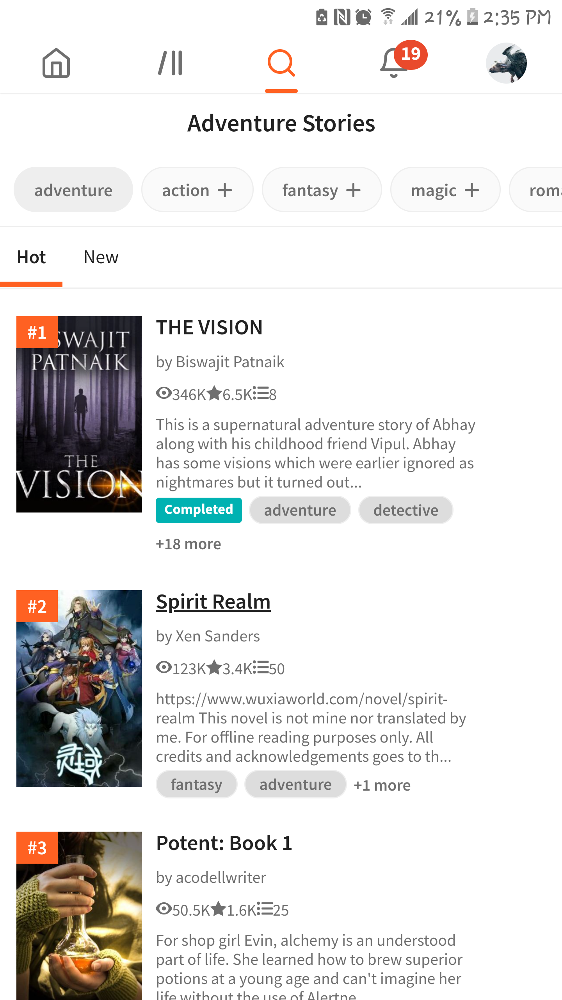
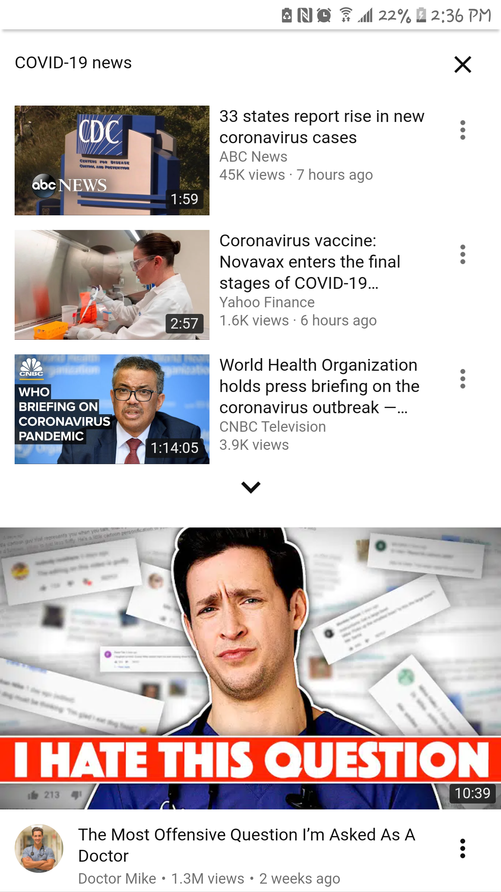

By Example
Visual Hierarchy
The website I want to use as an example for this principle is the Steam mobile webpage. Steam was developed by Valve Corporation.
In this picture I took from my phone, I want to note the visual hierarchy. There's a lot that can be referenced when it comes to that, but I want to focus on the price. It makes me chuckle because I often use this platform, and I had not noticed it before. When games are on sale, the percentage they take off from the original price is emphasized more. It's highlighted in green and in a larger font than the discounted price of the game. It is far more appealing to see the discounted percentage, so they design it so it grabs your attention before the new price does.
Repetition
The website I am using is Wattpad. The owner of the website is a company called WP Technology.
I think there's a good amount of repetition going on here. The overall appearance of the website remains consistent all throughout. The theme colors of Wattpad are primarily white and orange. In the screenshot, you can see that as the stories are listed down "1, 2, 3," they stay framed by the same orange color. It is repeated, so it stands out through all the white and the covers as a related group of elements. Whenever something important is highlighted, it's in orange. Also, the headings are repeated. The weight of each section of text stays the same according to their hierarchy,
Proximity
The website I'll be using as an example for this principle is YouTube. The parent organization for this website is Google.
Proximity plays a large part of design. It's how we can read what elements or pieces of information are related. In the screenshot I took through a mobile browser, you can see that under the heading, "COVID-19 news," the recommended videos are stuck together in closer proximity than the rest of the page. This tells you that these videos are going to be related to COVID-19 news. After that, there's an arrow, and a relatively big distance is formed between the last COVID-19 video on the list and the next video that is recommended, the next video most likely not surrounding the same topic. Through distance, we are able to group elements together and understand the relationships better.